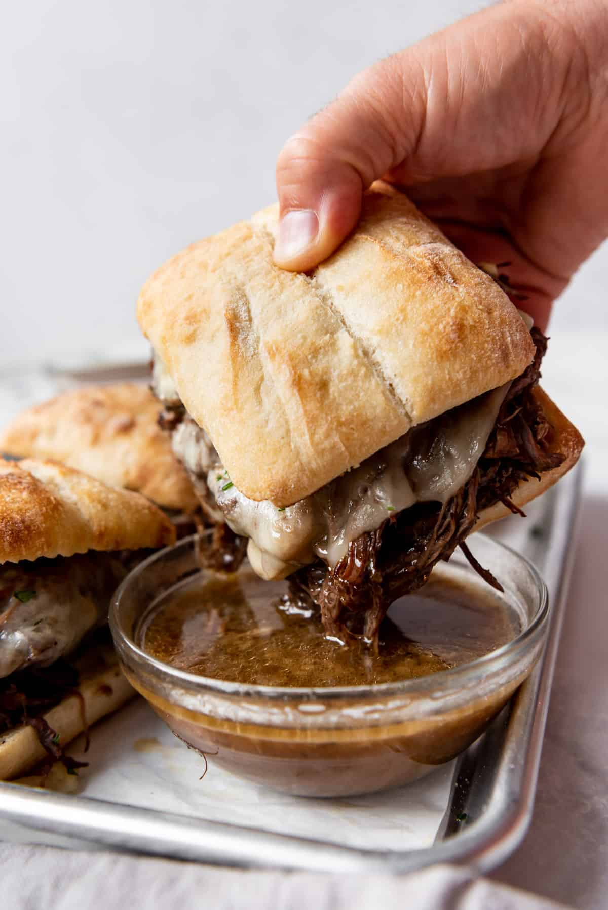

Slow Cooked French Dip Au Jus Sandwiches
Slow cooked roast beef, served on toasted rolls with
melted cheese and delicious au jus. This Recipe requires a slow cooker or instant pot.
Prep Time: 15 Minutes
Cook Time: 4hrs to 10hrs
Total Time: 4hrs to 10hrs and 15 Minutes
Servings: 8 Servings
Author: Amy Nash
Recipe courtesy of House Of Nash Eats.

Ingredients
- 2 Tablespoons olive oil
- 2 ½ to 3 pounds beef chuck roast
- Kosher salt
- Freshly ground pepper
- 2 (1-ounce) packages dry onion soup mix
- 2 cups water
- 2 (14.5-ounce) cans beef broth
- 6-8 slices swiss or provolone cheese
- 6-8 crusty rolls
Instructions
Makes 8 servings.
- Heat olive oil (2 Tbps) in a large skillet over medium-high heat. While the oil is heating, generously season all sides of the chuck roast with kosher salt and freshly ground pepper.
- When the oil starts to shimmer, carefully place the roast in the hot pan and sear it on all sides by letting it sit without moving for a minute or two on each side before flipping it. Quickly brown the roast to add flavor and sear in the juices.
- Transfer the roast and the pan juices to your slow cooker. Sprinkle onion soup mix over the roast and add water (2 cups) and beef broth (2 - 14.5 ounce cans). Cook on high for 4-6 hours or on low for 8-10 hours.
- When the meat is so tender it shreds easily with a fork, remove the roast from the slow cooker and shred. Serve by piling the shredded meat onto sliced, crusty rolls with a slice of Swiss cheese. Toast the cheese and top bun under the broiler until the cheese melts and the bun starts toasting. Serve with juices from the slow cooker as aus ju for dipping.
Notes
For extra flavor, try using Garlic Bread instead. Add in a few sides,
like mashed potatoes and/or cream spinach to complete the meal.
Lost? Click this link to take you home.